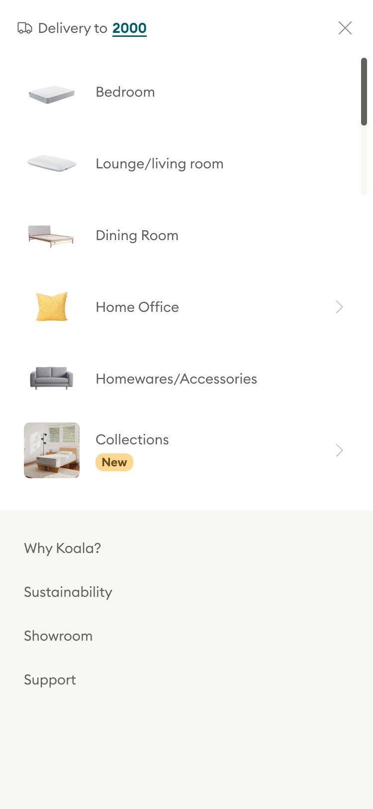
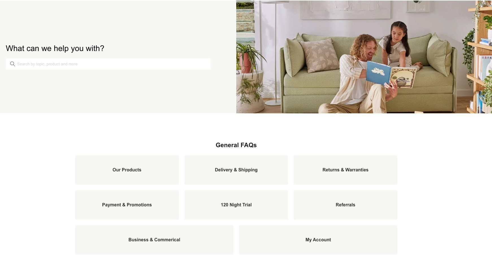
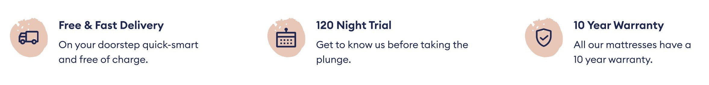
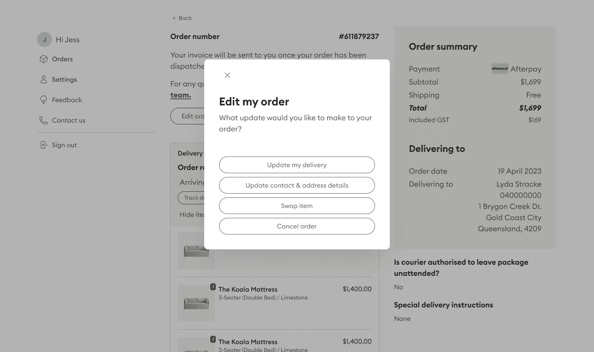
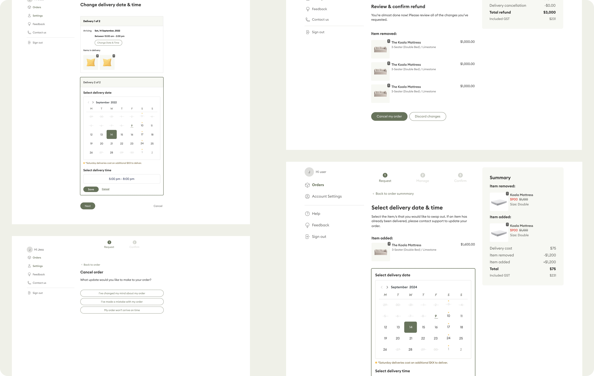
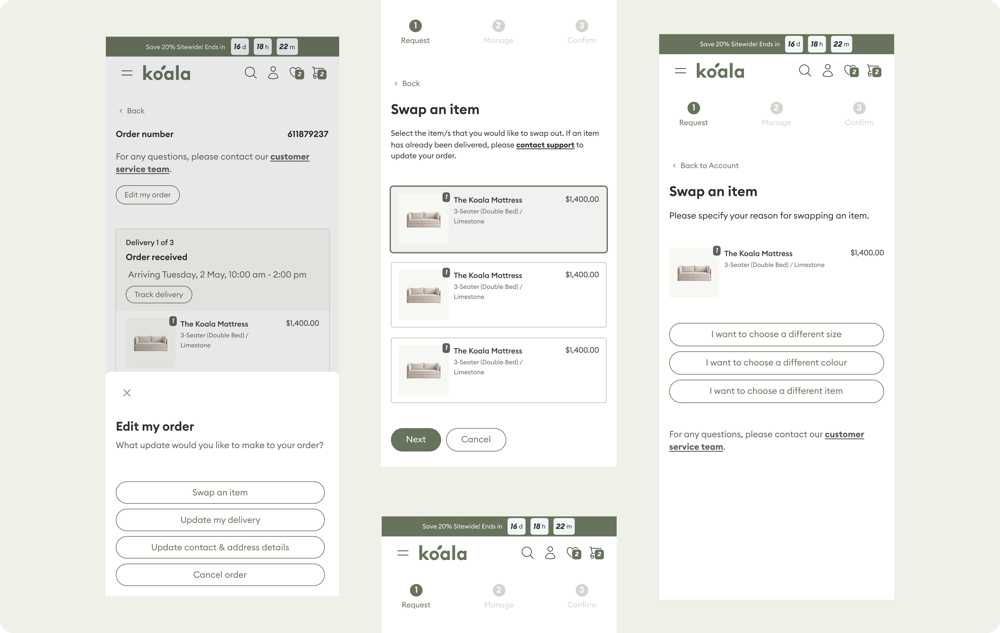

Extend the customer journey beyond checkout
The original case study frames post-purchase service as part of the overall shopping experience. Customers needed ways to access order information and resolve common requests, while the business faced support effort for tasks that could potentially be handled through self-service.
The opportunity was to make the account area useful after purchase, not merely a place to store personal details.

Find the moments that trigger support requests
The original project investigates how customers navigate post-purchase questions, order changes and help content. Its full-page narrative includes research into common service needs and points of friction, including navigation and access to information.
These screenshots provide the original visual context; precise research findings and customer quotations still need to be copied from the Framer editor before we treat them as documented evidence.


Make order management self-service
The original case study presents a more comprehensive accounts experience with order management and post-purchase actions. The design direction brings relevant order information and tasks into one customer-facing portal, rather than requiring customers to contact support for every change.
Its illustrated flows cover order-related actions, including amendments, and responsive account interfaces. The original case study describes the solution as an industry-first holistic portal; that positioning remains a historical project claim rather than an independently verified market comparison.



Reduce service friction, improve customer control
The original portfolio and pre-Mable CV describe adoption and operational improvements associated with the accounts experience. The figures below are historical self-reported claims, not newly verified measurements.
The older portfolio was also previously described as reporting a 60% sign-up rate. That does not necessarily contradict the CV, but the different denominators, cohorts or time windows have not been established, so neither should be treated as a verified comparable rate.
What we still need to confirm
The images above are original assets exported from your Framer project. Their captions intentionally avoid claiming specific experiment or feature outcomes not established by the available source.
Sources: Original Koala accounts full-page screenshot, Framer asset manifest, pre-Mable CV and prior portfolio summary. Original project ↗